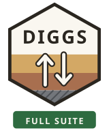
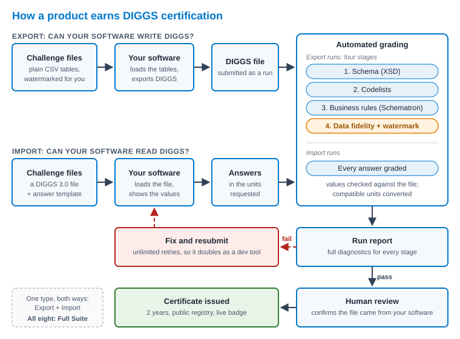

Dataforensics
Dataforensics DIGGS Conversion Service v3

Geosetta
Geosetta DIGGS Tools v2026

Rocscience
RSLog v5

Ask a software vendor whether their product supports DIGGS and you will often hear "yes." Until now, there has been no way to check that answer before you bet a project on it.
The trouble is that "supports DIGGS" can mean a lot of things. A file can pass the DIGGS schema check and still be wrong where it counts. It might drop half the SPTs from a boring, write a depth in feet where the file says meters, leave groundwater observations behind, or attach a lab test to the wrong sample. Schema validation tells you the file is shaped correctly. It does not tell you the data inside it survived the trip.
Most engineers find this out at handoff. The file arrives, it opens, and somebody spends an afternoon comparing it against the PDF log to see what went missing. That is the same manual re-checking DIGGS was supposed to eliminate, and it erodes trust in the standard itself.
Geosetta has launched the DIGGS Certification Program, a free, challenge-based program that grades vendor software against the DIGGS standard and publishes the results in a public registry.
The program was developed by a member of the DIGGS committee. It is built and operated by Geosetta and validates against the same published schema, codelists, and business rules that the ASCE Geo-Institute's DIGGS committee maintains. Certification is free to vendors thanks to support from Rocscience's RSLog.
The program covers the four data types that make up most day-to-day geotechnical data exchange, in both directions:
| Data type | What the challenge contains |
|---|---|
| SPT | Borings with Standard Penetration Tests, lithology, and groundwater, including weight-of-hammer and weight-of-rod tests |
| CPT | Piezocone soundings with full qc, fs, and u2 channels |
| Lab | A 12-sample program: water content, Atterberg limits, wash No. 200, gradation with hydrometer, USCS classification, specific gravity, unit weight, organic content, Standard Proctor, and corrosion |
| MWD | Measurement-while-drilling records in both the depth domain and the time domain, including rod changes |
Each data type is certified separately for export (your software writes DIGGS) and import (your software reads DIGGS). A product that holds both for a data type is listed as Export + Import, and a product that holds all eight is listed as Full Suite.
Certification is built around a simple idea: give the software real data, and check what comes out the other end.
Export challenges hand the vendor a package of plain CSV tables, deliberately not DIGGS or AGS, so nobody can pass by copying a file through. The vendor loads the data into their software, exports DIGGS, and submits it. The submission then goes through four automated stages:

Figure 1: Export and import challenges are graded automatically, failed runs come back with a full report for unlimited retries, and passing runs go to human review before a certificate is issued.
That fourth stage is the one that matters most to engineers, and it is the one schema validation alone never covered. A certified export is not just valid DIGGS; it is your data, complete and correct, in DIGGS.
Import challenges run the other way. The vendor gets a DIGGS file, loads it into their software, and answers a set of questions about what the software shows, in the units the question asks for. If the software misreads a unit or skips a test, the answers will not match.
Retries are unlimited, and every run returns a full diagnostic report, so the program also works as a development tool. A passing run is then reviewed by a person before the certificate is issued. A file that was edited by hand to get through the automated checks will not survive that review. Certificates last two years, appear in the public registry, and come with an embeddable badge that updates live: it turns grey if the certificate expires and red if it is revoked.
At the time of this publication, three products have completed certification. The marks below are live: they are served straight from the registry and update automatically as certificates are added, renewed, or expire. Click any mark to open the full registry.
| Product | SPT | CPT | Lab | MWD |
|---|---|---|---|---|
| Dataforensics DIGGS Conversion Service v3 | Export + Import | Export + Import | Export + Import | Export + Import |
| Geosetta DIGGS Tools v2026 | Export + Import | Export + Import | Export + Import | Export + Import |
| Rocscience RSLog v5 | Export + Import | Export + Import | Export + Import |
Dataforensics and Geosetta hold the Full Suite. Geosetta's tools serve as the program's reference implementation: they were certified first, against the same challenges and grading as every other product. The live registry, with verification links for every certificate, is at diggs.geosetta.org/?tool=certified_software.
Dataforensics has been a longstanding advocate for data interchange within the U.S. geotechnical industry because the efficient exchange of data enables advances in geotechnical workflows, engineering analysis, design, and construction. Requiring consultants to adopt a client's preferred data management platform can introduce unnecessary inefficiencies and may disrupt established workflows that have been optimized over many years.
A common exchange standard such as DIGGS allows each organization to use the tools and workflows that best meet its operational needs while still delivering data in a format that can be reliably consumed by others. Certification validates that Dataforensics' DIGGS import and export capabilities within OpenGround conform to the standard and accurately exchange data. More importantly, certification provides assurance that data can be exchanged consistently between certified systems, reducing the risk of misinterpretation or data loss.
The certification reported exactly which values differed and why. In some cases, these were edge cases that customers could eventually encounter in production environments. In other cases, the process identified issues within the certification scenarios themselves that were subsequently resolved by the DIGGS committee. Addressing these issues during certification improved both the certification process and the robustness of Dataforensics' DIGGS implementation. For our clients, certification provides confidence that geotechnical data can be exchanged accurately between systems, reducing manual verification effort and lowering the risk of errors during project delivery.
Many engineers rely on RSLog to create and manage their boring logs and cross-sections, so it must read DIGGS as reliably as it writes it. That is why we certified SPT, CPT, and MWD for both import and export, with the lab compliance coming in early 2027. Data received from a site investigation program or a public source such as Geosetta should arrive in RSLog intact, and data exported from RSLog should reach the next tool unchanged.
We support the program to keep certification free, because interoperability depends on broad participation. A standard is only as useful as the number of tools that implement it correctly, and certification costs could exclude the smaller vendors the industry needs. Each newly certified product increases the value of every other certified product.
You do not need to know anything about XML to benefit from this. Before you commit a project to a workflow, or a subconsultant to a deliverable format, look up the products involved in the public registry. It shows which products are certified, for which data types, and in which direction. Every badge links to a verification page, so the claim can be confirmed rather than taken on faith.
You wouldn't hire an engineer without checking their license, or send samples to a lab that never sits for proficiency testing. Certification gives software the same kind of check: a published standard, an independent test, a public lookup, and a renewal date. It doesn't say the engineering is right. It says the data arrives the way it left.
When both ends of an exchange are certified, the data moves as structured information that carries its units, coordinates, and test methods with it. That is what made the pipeline in our data center CPT post work without a single manual reformatting step, and it is what lets a wrapped DIGGS viewer show a client exactly what the engineer is working from.
Owners and agencies can go one step further: reference certified software in data delivery specifications. "Deliver in DIGGS" is a good start. "Deliver in DIGGS from software certified for that data type" is a requirement you can verify.
The whole process runs through the self-service vendor portal at diggs.geosetta.org/?tool=get_certified:
Before you submit, you can pre-check a file at certification strictness (schema, codelists, and business rules) with the free DIGGS Validator. Teams that want to automate certification in their build pipeline can use the full API at https://diggs.geosetta.org/api/cert.
Once approved, embedding your badge on a website, in a proposal, or in release notes takes one line:
<a href="https://diggs.geosetta.org/api/cert/verify/GS-SPT-EXP-2026-0001">
<img src="https://diggs.geosetta.org/api/cert/badge/GS-SPT-EXP-2026-0001.svg"
alt="DIGGS Certified: SPT Export">
</a>A data standard earns trust one correct file at a time. For years the industry has had to take "supports DIGGS" on faith and then check the work by hand. Certification replaces that with something better: a public, repeatable test that any engineer can look up and any vendor can pass. The more products that carry the badge, the less time the profession spends moving data, and the more it spends interpreting it.
Published by ASCE Geo-Institute | DIGGS Technical Committee